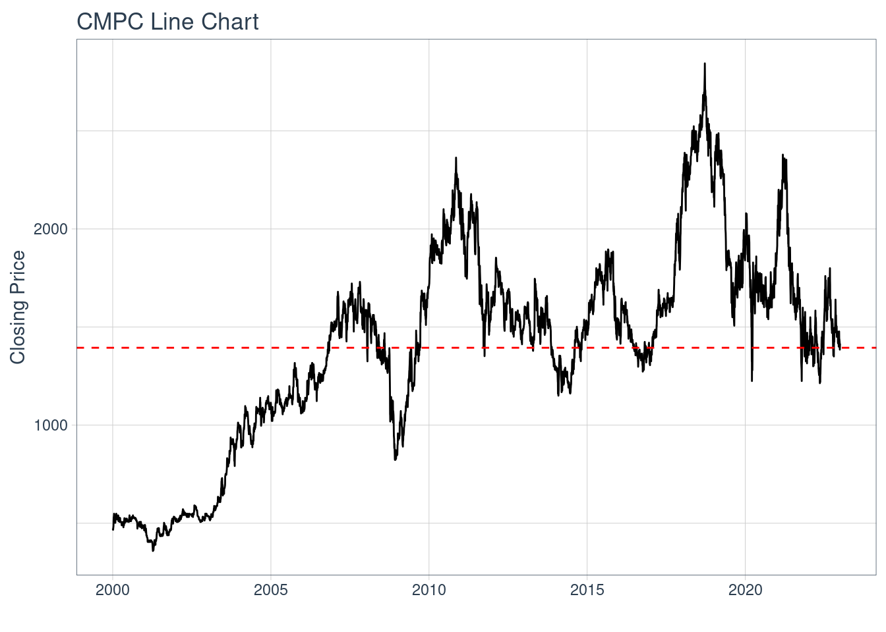
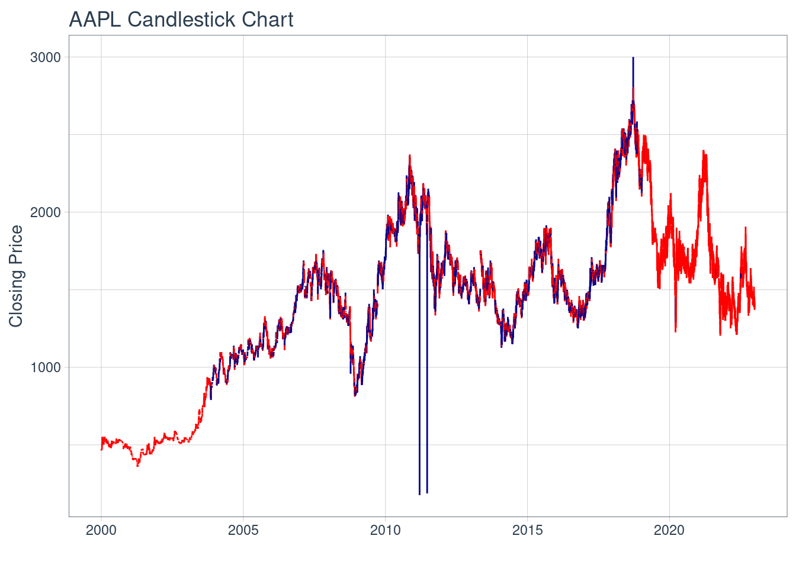
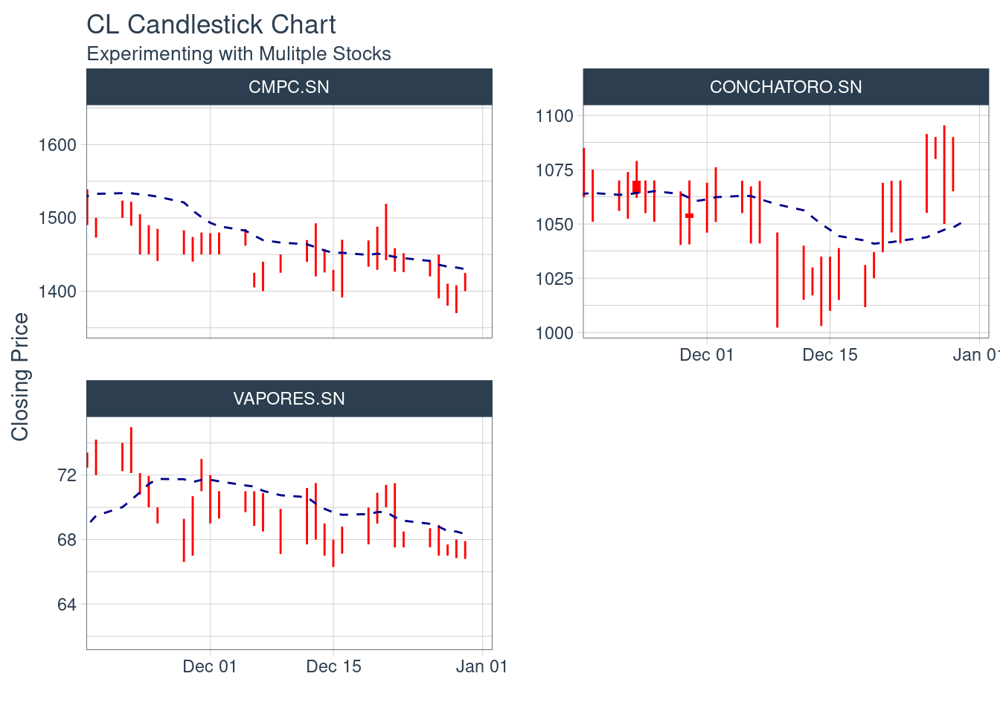

Plantilla Proyecto
Descripción Activo y Contexto (Hito 1)
Fecha de entrega: Jueves 28 de Septiembre 23:59.
Definición
Definir y describir activo a estudiar, acompañar con datos (tributa a indicador de Contexto) y con referencias científicas realizando una investigacion relacionada a articulos ubicados en la base de datos de Web of Science, con una calificacion Q1-Q2 y referenciada varias veces (Esto se verá en el tutorial de la semana 5).
El activo CMPC tiene un valor promedio para el intervalo igual a 1395
CMPC %>%
ggplot(aes(x = date, y = close)) +
geom_candlestick(aes(open = open, high = high, low = low, close = close)) +
labs(title = "AAPL Candlestick Chart", y = "Closing Price", x = "") +
theme_tq()
Motivación
Establecer la relevancia o potencial interés específico del activo que justifique el porque realizar la investigacion a este activo y no a otros. Argumentar haciendo referencia a datos o noticias actuales que motiven el estudio de este activo.
Contexto
Ingesta datos del activo y provee un análisis de estadística descriptiva simple junto con el análisis de una variable económica de contexto. Ejemplo: Si el activo es una minera, la variable puede ser el precio del metal. Acompañar este analisis con graficos, riesgos, horizonte de inversion, rentabilidad del activo, entre otros.

Ejemplos:


Tareas Semana 4
- Utilizar otros ejemplos de visualización: https://business-science.github.io/tidyquant/articles/TQ04-charting-with-tidyquant.html
- ¿Para que sirven las siguientes líneas en los bloques de código?
#| warning: false
#| echo: false- Definir activos en base a cada una de las industrias definidas: Inmobiliaria, Banca, Energía
- Buscar referencias científicas en la literatura para dar contexto al análisis
Análisis de Largo Plazo
Caracterización deuda (Aplicación cap. 15)
Describir el activo especificando en que realiza sus inversiones (por tipo de instrumento). Especificar sus acciones comunes, preferentes y bonos relacionados aplicando lo aprendido en el capitulo respectivo.
Ejemplo de un fondo mutuo como activo a analizar:

Caracterización de emisiones históricas (Aplicación cap. 20)
Describir el proceso de emision de acciones paso a paso del activo seleccionado, caracterizando el tipo de colocacion que utilizaron en contraste con el procedimiento basico realizado en el capitulo respectivo.

Relación con activos derivados
Describe un activo derivado relacionado, mostrando datos de su evolucion. Tambien mencionar porque es importante este derivado para la activo en cuestion.
Aplicar procedimiento de valoración de un derivado por inclusión en estructura de retornos (a profundizar en tutorial de la unidad de Derivados).
Reporte grupal
Definicion de un balance de portafolio sobre los 3 activos del grupo, donde se especifique los pesos de cada activo de tal forma que maximize el retorno de la cartera.